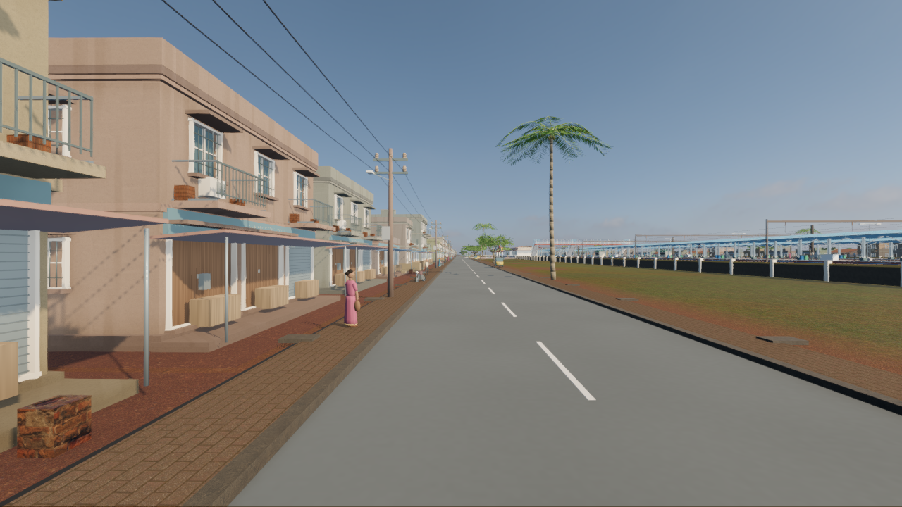
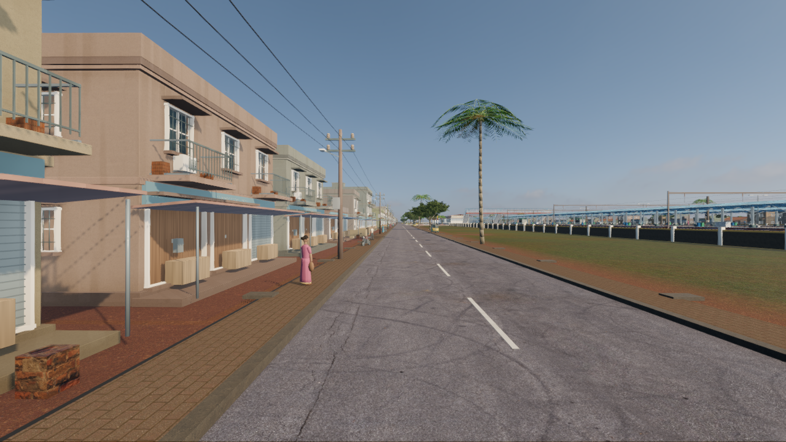
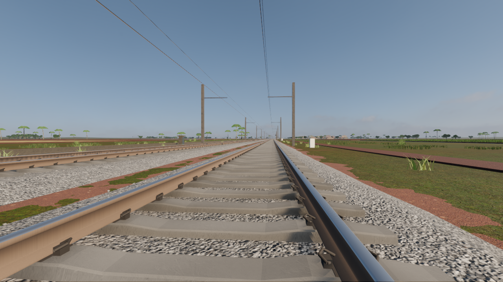
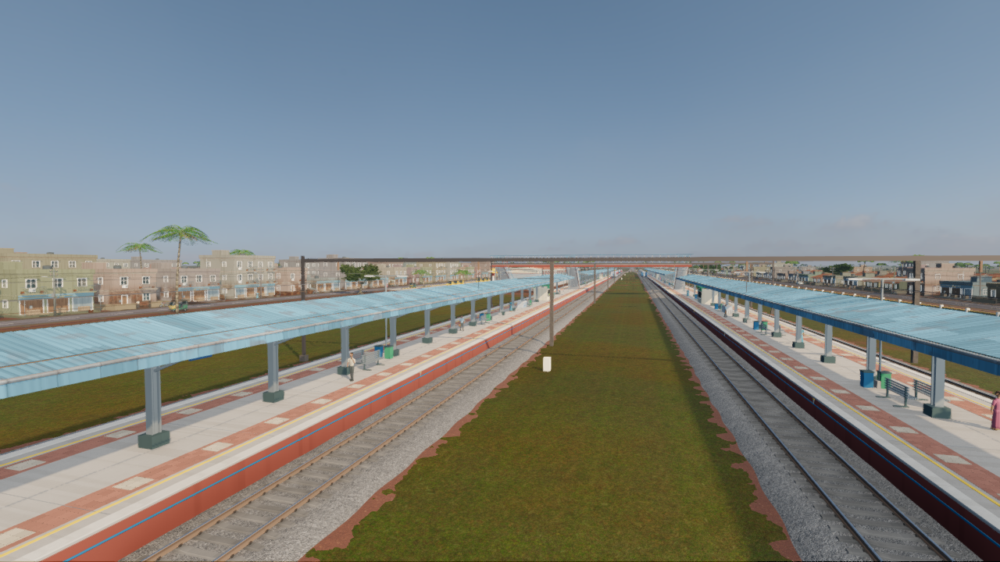

7 October 2026 · actual native game captures
Photographic leaf surfaces, worn plaster, roof-sheet variation, finer rice blades and irregular trackside ground cover. Compare identical camera positions with the previous build.


Previous buildFidelity updateDrag left to reveal the update, or use the slider's arrow keys. The preserved WAP-7 retains its original detail. These images use the game's normal rendering settings.


On the local Radeon 780M at 1280 × 720, fixed-camera mean frame times changed from 27.09 to 27.33 ms in the cab, 35.98 to 38.57 ms outside, and 21.24 to 22.66 ms in a passenger coach. These are short controlled samples, not measurements of the RTX 4090.